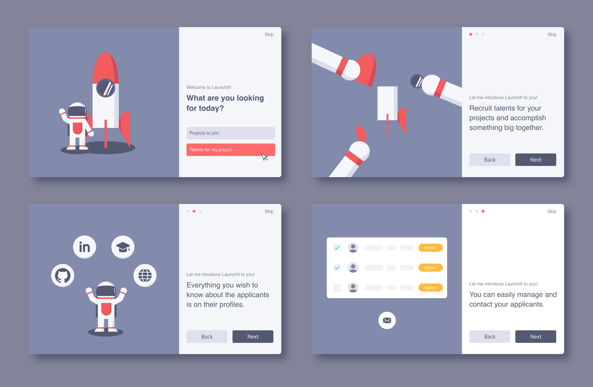
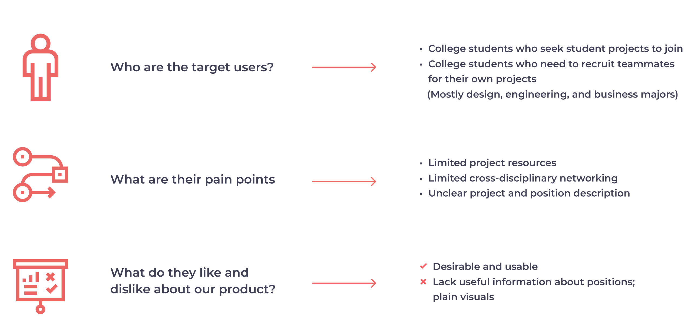
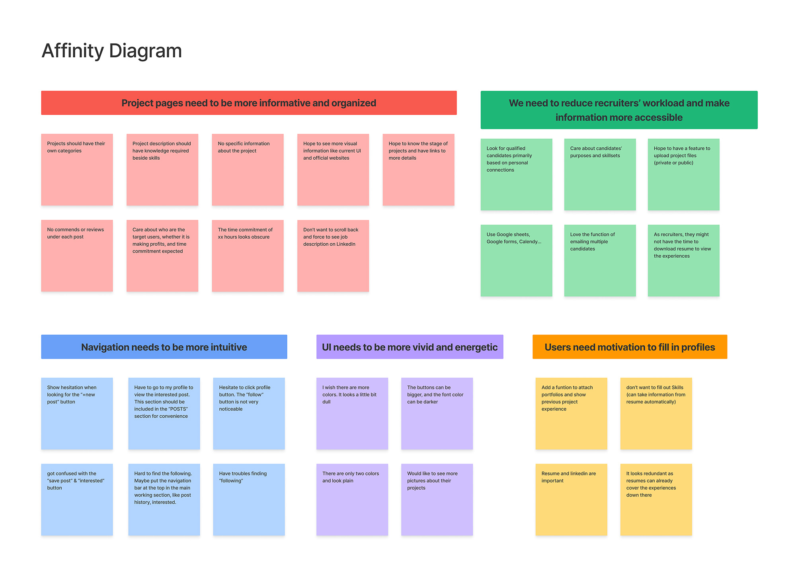
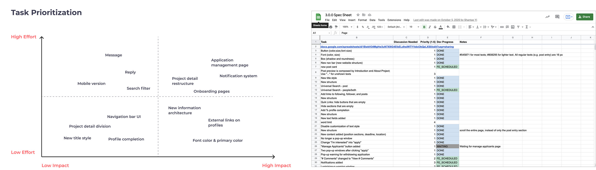
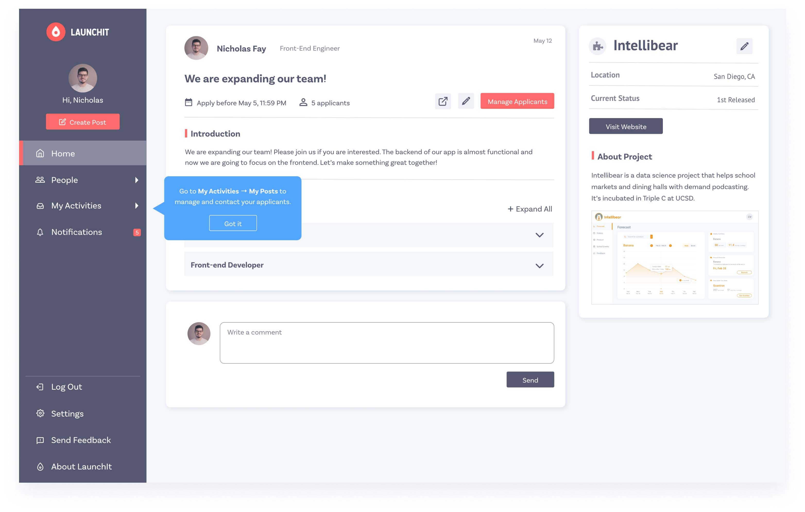
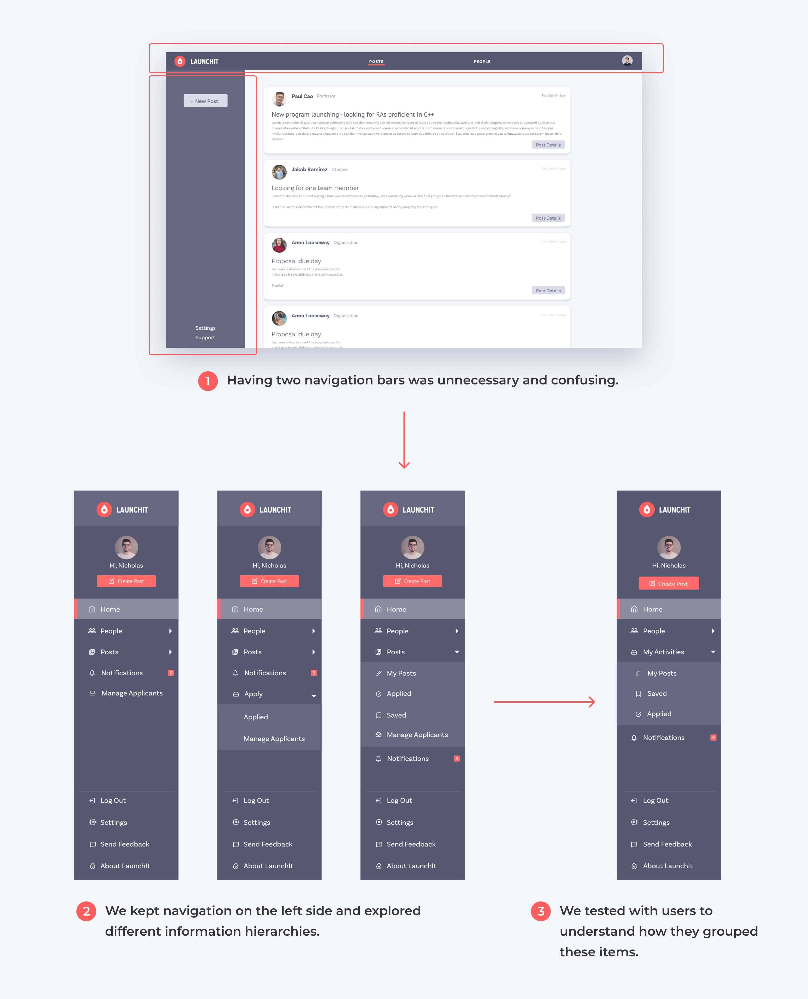
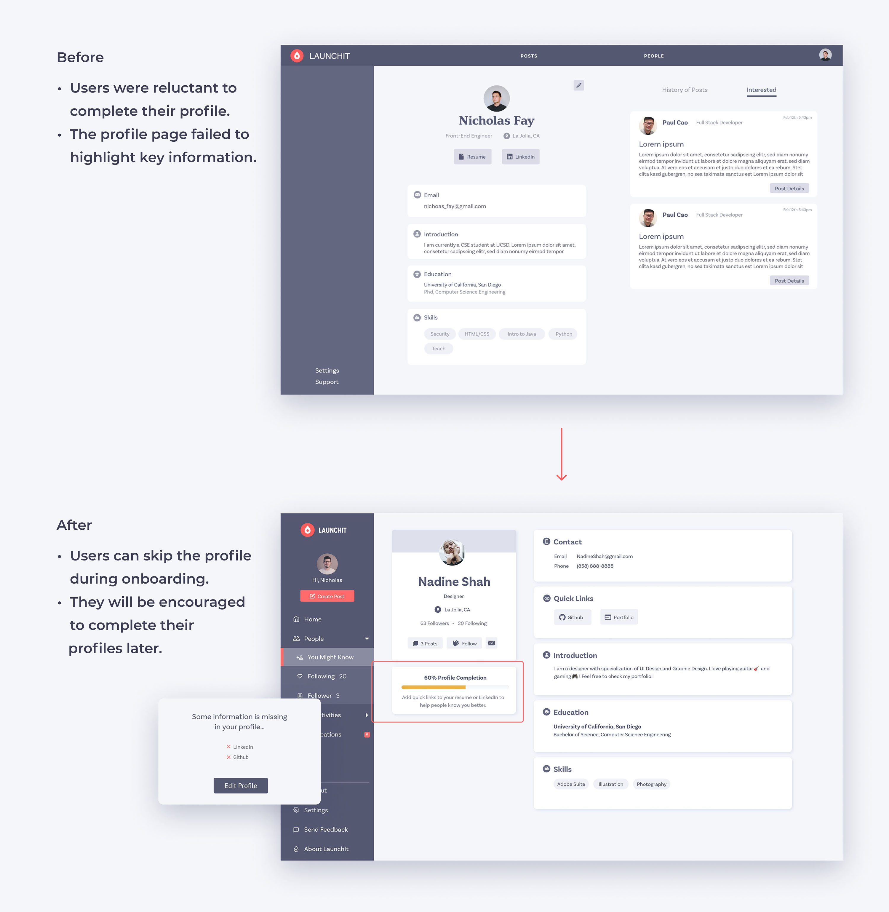
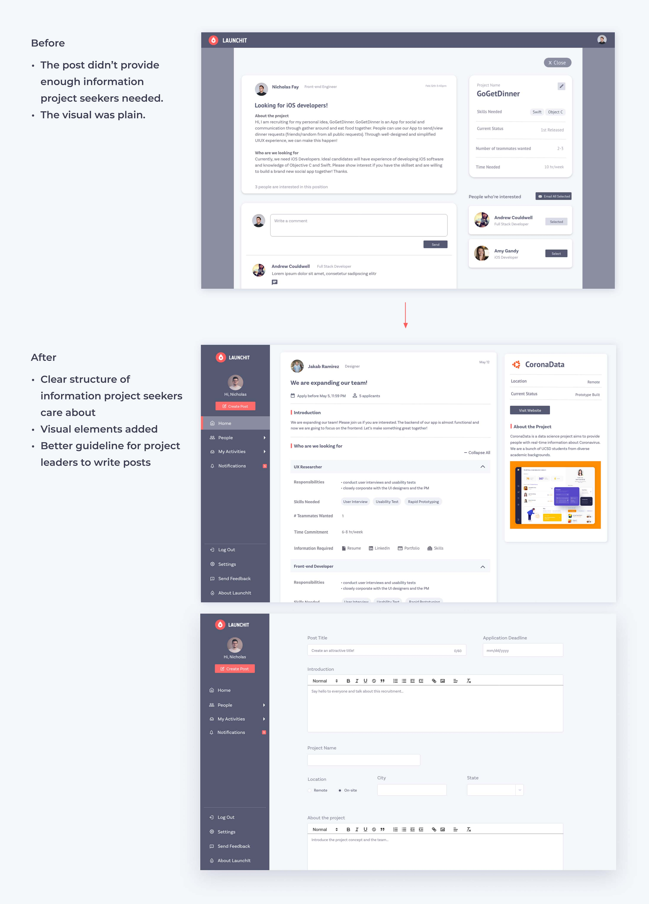
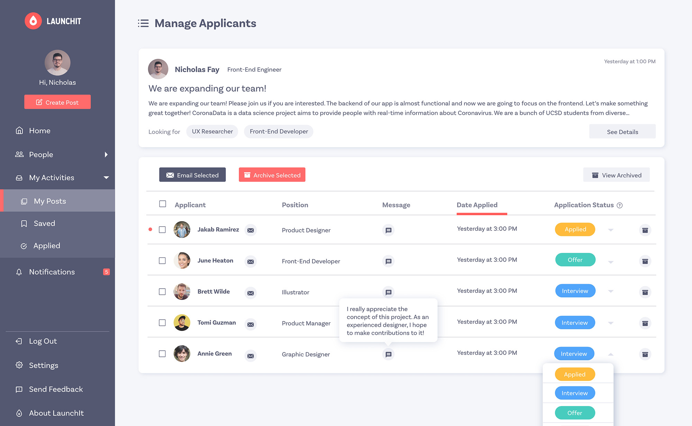
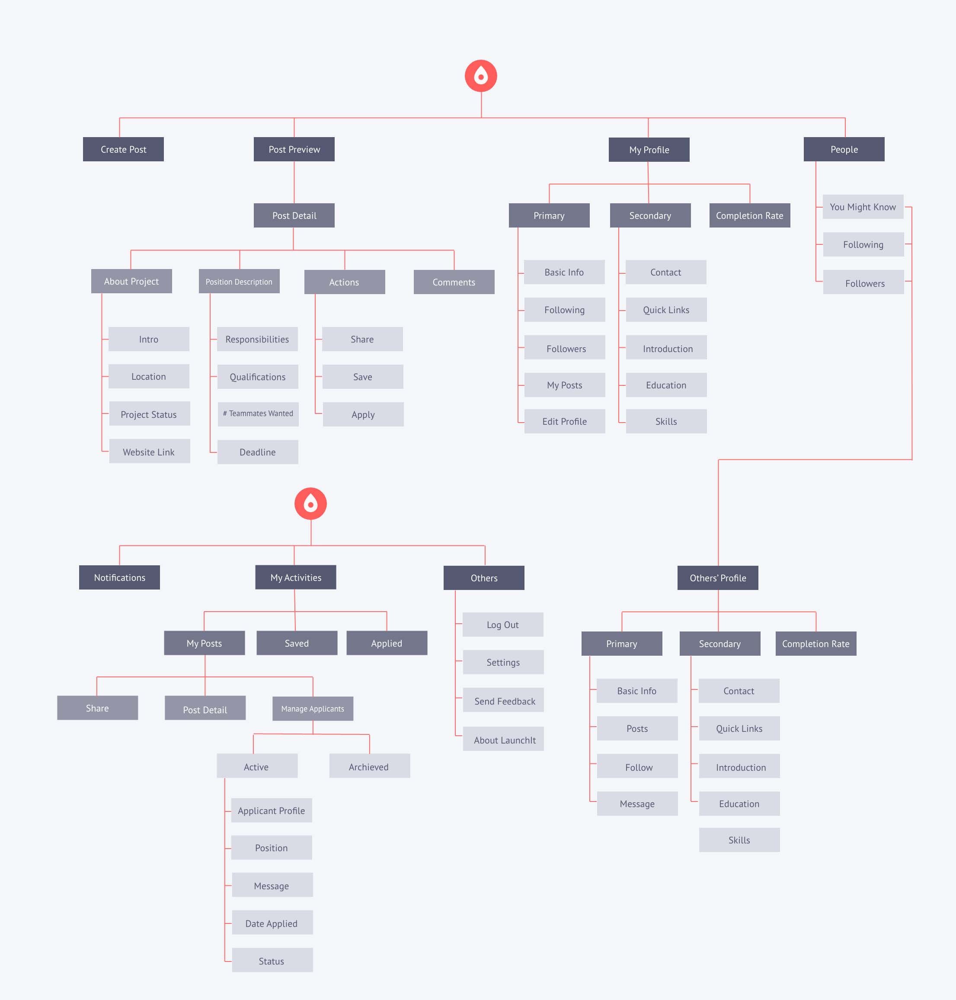

LAUNCHIT
Product & Visual Design · 2020
Overview
LaunchIt is a web app developed by a student startup. It's an idea incubator for college students to share their creative ideas and form teams for extracurricular projects.
My Contributions
- Headed and shipped the redesign of LaunchIt to improve its usability. Led the design of 5 new features to meet user needs.
- Worked with the PM and Tech lead to generate product strategies and roadmaps.
Duration
13 Months
My Role
Product Design Lead
Team
2 Product Designers
1 Product Manager
11 Software Engineers
Tools
Adobe XD
Principle
Adobe Illustrator
Final Output
Easily onboard
Since users tend to skip long and tedious tutorials, we created a quick and fun onboarding experience with animated illustrations that help them take a glimpse of our core features.

Final Output
Explore and join various projects
Students explore all kinds of projects posted by their peers and faculty. Under each post, they can easily access information about the project and apply to a position that interests them with a few clicks.
Final Output
Manage your projects at one place
With this all-in-one platform, project leaders can manage applicants and know their competence well. They can edit applicants' statuses and quickly access their GitHub, LinkedIn, portfolios, and resumes.
Project context
Redesign LaunchIt
When I joined the team as the product design lead, they had completed the first release. My job was to redesign the whole product and implement new features to improve user experience.
Original Design
problem statement
What's the challenge?
How might we redesign LaunchIt to streamline college students’ experience of forming multi-disciplinary teams for extracurricular projects?
user interviews
Learn about our target users
We interviewed 6 college students, asking about their decision-making process when seeking projects to join or recruiting people for their projects. We also asked them to explore LaunchIt and provide feedback so we could start with minor UI changes for the engineers to implement.
usability tests
Sythesize findings and prioritize tasks
We conducted the usability tests with 6 users and acquired many valuable findings. With a solid base of usability tests, we became confident to create more significant changes in our design.
We could make many changes based on the findings, but we didn't have enough capacity to implement them all. We prioritized tasks using the effort vs. impact matrix and applied a spreadsheet to keep track of the progress of design and development teams.
usability tests
Turn insights into decisions
👀 Finding 1:
The first-time users couldn't understand what LuanchIt was for immediately.
💡 Solution:
The PM suggested adding documentation to introduce all functions of LaunchIt, but I believed that users wouldn't have the patience to read through it. Therefore, I designed a concise and eye-catching introduction to the key features and a short step-by-step tutorial.

👀 Finding 2:
Navigation was hard when tabs were scattered on vertical and horizontal navigation bars.
💡 Solution:
We combined them into one navigation bar, explored 5 variations of information hierarchies, and tested them with users to find out which one was the most intuitive. Users’ mental models were very different from mine since many favored the version that I didn’t think would work at first.

👀 Finding 3:
Users were reluctant to fill in their profiles during the onboarding, while complete profiles were crucial for them to connect.
💡 Solution:
When signing up, users are only required to fill out basic information and can either complete their profiles or skip this part. If they choose to skip, the system will later encourage them to complete profiles when applying for positions. The profile page also shows the level of completion to increase their motivation.

👀 Finding 4:
Users couldn't find all information they cared about on the post, such as time commitment and required skills. The post had large chunks of paragraphs that were difficult to scan and a plain visual design.
💡 Solution:
We restructured the post, dividing the content into more digestible pieces. With a clear structure, project seekers could easily find all information that mattered to them. We guided post creators to list the details step by step. In addition, they can add project logos and images to introduce their projects and teams, making the post more visually attractive.

👀 Finding 5:
The recruitment process used to be complicated. Project leaders needed to switch between tools, such as Google Forms, Emails, and Excel.
💡 Solution:
We designed a new page for project leaders to manage applicants all in one place. They could easily view applicants' information, modify their status, and contact them.

information architecture
track structural changes with information architecture
I created an information architecture and kept it updated. We had three major iterations as we redesigned the navigation and added new functions.

style guide
Ensure consistency with a detailed style guide
I created a very detailed style guide to ensure style consistency throughout all pages and for maintenance. It specifies the use of colors in different conditions and includes components that are used frequently .
takeaway
collaboration in a cross-functional team
My main takeaway from this project is the strategy of efficiently collaborating with computer engineers during product development. I used to deliver my design to front-end developers until I completed a cycle of user interviews, usability tests, and prototypes. In this way, the team did not use time wisely, as developers needed to wait for my design. In contrast, at LaunchIt, we streamlined the process through frequent and concise communication between designers and developers. As the design lead, I worked with the PM to prioritize tasks for feature implementation.